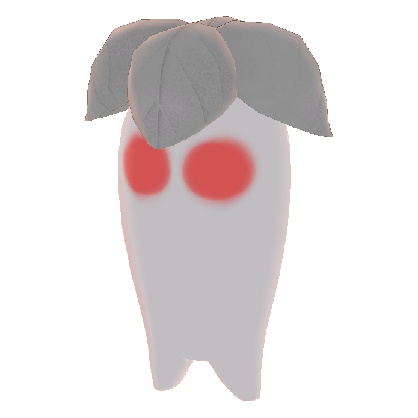

Field bossLv 15Southern Plains
Shadow Planta
Each Planta camp on the plains is ruled by a Shadow Planta, surrounded by six Planta Slaves. It begins merely curious, lashing out with shadowy vines and bursts of gloom only when provoked.
- CalmWhile its Slaves still stand, it waits in the camp and only fights if attacked.
- EnragedCut down enough of its Slaves and it turns Hunting: it leaves the camp and comes for you.
Always drops: a Shadow Petal, wanted for a quest.
Tip: pull the Slaves one at a time and be ready for the boss to come looking once the camp thins out.